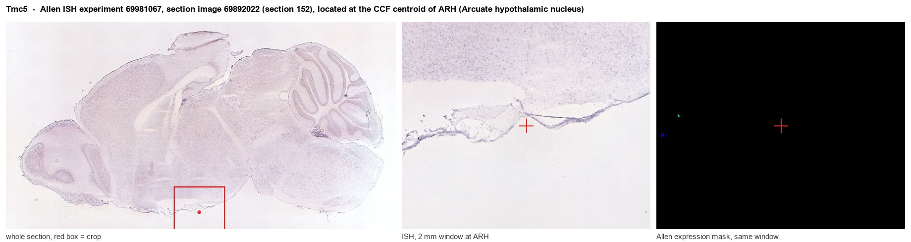
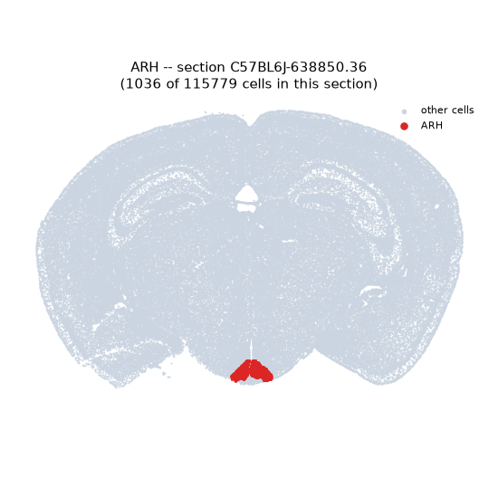
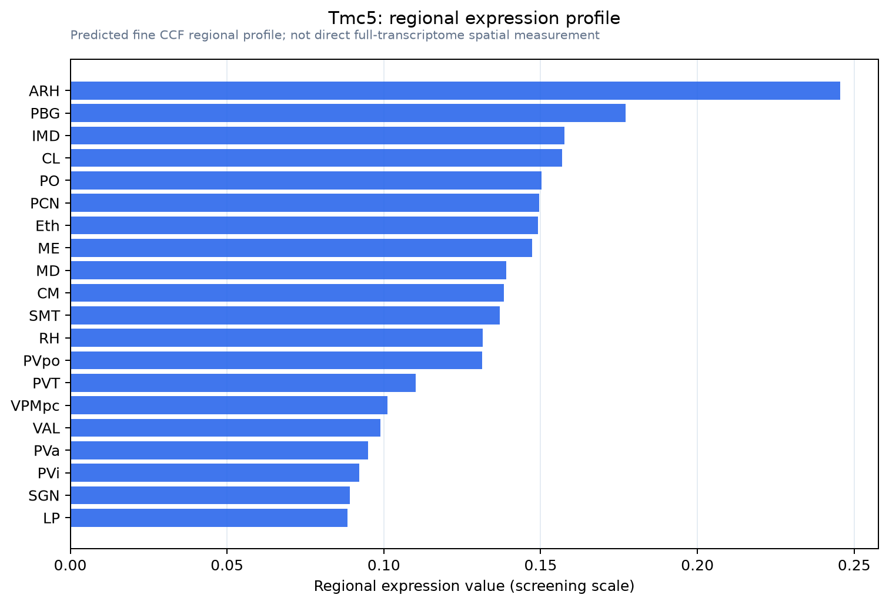

Tmc5
Transmembrane channel-like protein 5
Spatial tier: REGION_BIASED · Class: ION_CHANNEL · Top region: ARH (Arcuate hypothalamic nucleus) · Positive regions: 30/554
45.3Discovery Score
35.2Targetability Score
CEvidence grade C
What this means: Tmc5: fine CCF profile is region-biased toward ARH (top regions: ARH, PBG, IMD, CL, PO); this is a discovery lead, not direct proof.
Function in ARH: evidence, prediction, innovation
- Gene function
- TMC5 belongs to the transmembrane channel-like family, relatives of TMC1/TMC2 that form the hair-cell mechanotransduction channel. It is predicted to be a mechanosensitive cation channel or ion transporter at the plasma membrane. Its normal expression is largely epithelial (airway, gut, prostate) and it is repeatedly upregulated in prostate, gastric and liver cancer.
- Region function
- The arcuate nucleus sits at the base of the hypothalamus next to the median eminence, where AgRP/NPY and POMC neurons sense leptin, ghrelin and nutrients to set food intake and energy expenditure; its kisspeptin and dopaminergic neurons also gate GnRH pulses and prolactin.
- Published in this region
- none No region-specific literature found. The closest finding is Braz et al. 2026, where Tmc5 deletion in mouse sensory neurons reduced mechanical, heat and cold nociception and increased scratching, showing Tmc5 can shape neuronal sensory signalling; Allen ISH (experiment 69981067) gives only near-background arcuate signal (energy 0.03).
- Predicted function
- Prediction: if TMC5 protein is really present in ARH, the likeliest role is a mechano- or osmo-sensitive cation conductance in tanycytes or in neurons contacting the median eminence, tuning resting potential to ventricular osmolality and nutrient flux. Conditional knockout should alter fasting-refeeding dynamics and osmotically evoked firing rather than baseline weight. The prediction is speculative given weak atlas support.
- Innovation
- ★★★★★ 5/5 No published work places Tmc5 in hypothalamus at all, so a confirmed arcuate role would be new, though low atlas signal is a real risk.
- Tools
- Tmc5 knockout mice used by Braz et al. 2026; TMC-family antibodies and TMC5 cancer-cell reagents; Allen ISH experiment 69981067. No Cre driver, agonist or blocker known.
- References
Direct evidence located at the region

Allen ISH experiment 69981067, section image 69892022 (section 152): the section that contains the CCF centroid of Arcuate hypothalamic nucleus according to the Allen image-to-atlas alignment (reference_to_image), with a 2 mm window around that point. Left: whole section, red box = window. Middle: ISH signal. Right: Allen's expression-mask view of the same window. open this image in the Allen viewer
Look it up yourself: Allen Mouse Brain ISH for Tmc5Allen reference atlas: ARH (structure 223)ABC Atlas MERFISH viewer(in the ABC Atlas choose dataset MERFISH-C57BL6J-638850-CCF, colour cells by gene "Tmc5" or by parcellation_substructure "ARH")All genes confined to ARH + 3-D brain
Direct spatial evidence
MERFISH REGION LOCATOR

Regional expression figure

Predicted WMB × fine-CCF profile; not direct full-transcriptome spatial measurement.
Spatial profile
Evidence and specificity
- Evidence status
- PREDICTED_FINE
- Direct sources
- None; predicted localization only
- Exclusive threshold
- 12 positive regions out of 554
- Spatial specificity
- 0.314
- Top-region fraction
- 0.054
- Filter status
- PASS
Interpretation limits
- Cell-type-to-region projection is imputed expression, not direct spatial measurement.
- Adult reference atlases do not establish stability across age, sex, strain, state, or disease.
- Transcript abundance does not guarantee protein abundance or genetic-tool performance.